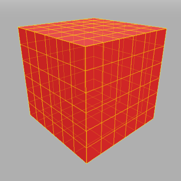
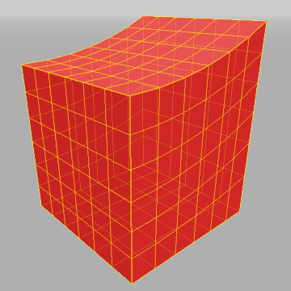

Assignment 1: Jello simulation!
Due: February 14, 2011
Starter code: For
MSVC 2008
Overview
The purpose of this assignment is to get to know 3D mass-spring
particle systems, numeric integration, and collision detection
and
response.

The code includes
an incomplete jello animation system. Although much of the bookkeeping
code has been written, the following parts are missing:
- (20 points)
Forward Euler and midpoint integration. RK4 integration
is provided, but all three integration methods should be available and
working. In particular, you will need to
- Implement JelloMesh::EulerIntegration()
- Implement JelloMesh::MidpointIntegration()
- (20 points)
Particle forces other than gravity. We've
implemented gravity for you, but you should implement spring
forces. You can also try implementing other forces if you
like,
such as those input by a user (see the extra credit for more
information). Let us know what you try! In
particular, you will need to
- Implement spring forces in JelloMesh::ComputeForces(ParticleGrid& grid)
- Find good spring constants
- (15 points)
Collision and penetration detection. The
particles should be tested for collisions and contacts with
the ground and with the
cylindrical objects in the scene. In particular, you will need to
- Look at the function JelloMesh::CheckForCollisions(ParticleGrid& grid), which collects
contacts and collisions into lists
- Implement JelloMesh::CylinderCollision()
- Implement JelloMesh::FloorCollision()
- (20 points)
Collision and penetration response. The system
intends for you to consider "collision" to be the case where a particle
is very very close to, but not really inside, an object. In a
collision, particles which are moving towards, rather than away from,
the object should have a gentle impulse (change in momentum, manifested
as a change in velocity) applied to them. The exact details of this are
up to you: find something which produces good-looking results.
"Penetration", on the other hand, is the situation where the particle
is actually inside a cylinder. If there is penetration, you should
apply a stiff spring force on the particle out from the surface of the
object. In particular, you will need to
- Implement JelloMesh::ResolveContacts(ParticleGrid&
grid)
- Implement JelloMesh::ResolveCollisions(ParticleGrid&
grid)
- (15 points)
Extra springs. A simple network of structural
springs connect the particles, but there are no shear or bending
springs. The decisions
you make on spring placement will have marked effects on the movement
of the jello. You should be creative in your decisions, but in any case
you should have springs to simulate shear and bending resistance.
In particular, you will need to
- Modify JelloMesh::InitJelloMesh() to augment the structural
springs with bend and shear springs.
Practicalities
The starter code has been designed to compile and run on a
Windows
system running Visual Studio 2008. The starter code
depends on tinyxml and devIL, both of which come with
the homework starter kit.
All assignment code should be added to the JelloMesh class which
contains function stubs marked with "TODO" to indicate where you should
implement your assignment.
Getting started
Below we list the features included with the starter kit:
- Run the code. You should see a square mesh floating in space.
- Left drag the mouse to orbit the camera around (0,0,0). Middle drag the mouse to zoom. Alt-middle mouse to pan.
- From the right click menu, you can
- Start, pause, or reset the simulation
- Toggle the visualization of springs, forces, and velocities
- Select the numerical integration type
- Toggle
recording. When enabled, the simulation will output images for
each simulation step which you can use to make videos of your
jiggly cubes.
Questions for you to answer (10 points)
- What is the effect of the Ks and Kd parameters on the jello?
- What are the benefits and the drawbacks of the collision
system used here? What are some different ways in which it could be
improved?
- Does the jello behave realistically?
Submission
Prepare a README.txt file with your responses to the above
questions, as well as discussing the project and your solution to it,
in the project directory. Discuss different things you tried with the
jello, and design decisions you made. If you ran into problems and were
unable to complete the assignment, describe what works, what doesn't,
and how I should explore your project in order to get the best idea of
what you've accomplished. If we gave you special dispensation to change
or add files, mention that as well. Also list all resources, whether
books, webpages, or fellow students, that you used when doing the
assignment.
Include, in an output directory, videos of your favorite jello
animation.
Before submission, you MUST clean the solution and
additionally
delete the NCB file in the project directory. If you do not do this,
you WILL lose points. Submissions that do not compile will
not be
graded.
Make sure that your submission can be downloaded to a Moore
100
computer, built, and executed without any problems or other setup
required.
Submit the completed assignment, zipped up, to the Courseweb
site through the assignment submission link. If you encounter problems
or aren't sure if your submission went through, additionally email the
file to any of the TAs or graders.
Extra Credit
If you feel like going beyond the scope of the assignment, you
should consider the following extra credit assignments. Get the
assignment working without them first.
- (5
points) Support collisions with other shapes, such as an inclined
plane, cubes, and spheres (Implement JelloMesh::CubeCollision()
, Implement JelloMesh::SphereCollision()). Make a new,
interesting scene.
- (5 points) Let the user pick and drage particles on the cube surface
- (5
points) Support user generated forces. When the user drags the
mouse, generate a corresponding forces to push the jello.
- (5
points) Support a procedurally generated force field
- (20
points) Support a different jello shape. For example, try
tetrahedralizing a mesh using a 3rdparty API such as tetgen
(http://tetgen.berlios.de/)
You can get a maximum of 20 points in extra credit. Simply
implementing these things doesn't guarantee you a 20; you really need
to go above and beyond to get the full amount.
Start early! Have Fun!